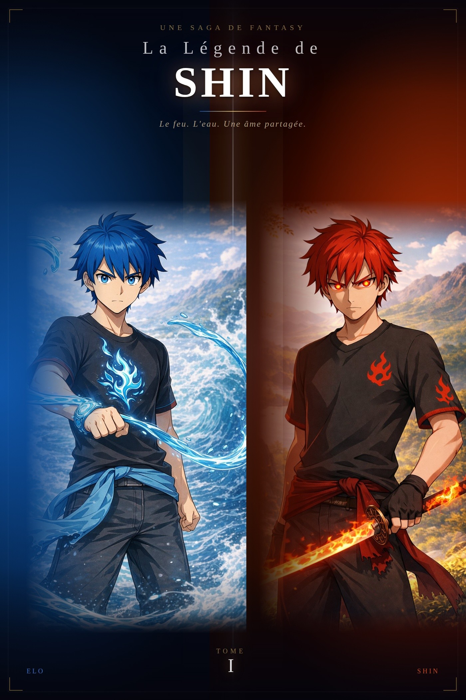

8 chapitres · Monde d'Astrael
Résumé
Shin et Elo sont deux frères sans Nekkai, rejetés par Sahra. Un jour, entraînés dans la Forêt du Ying, ils tombent dans une grotte ancienne où dorment deux dragons millénaires — Kaji, le feu originel, et Kija, l'eau éternelle. Les dragons choisissent les frères et fusionnent avec eux, éveillant des pouvoirs inédits.
Guidés par Yohan, un vieux maître, ils s'entraînent et forgent leurs armes ancestrales. Mais le royaume de Sahra les traque. Lors d'un piège tendu dans une ville, Elo sacrifie son âme pour sauver Shin. Seul désormais, Shin porte le bracelet de son frère et fonde le Nekketsu. Sa route le mène jusqu'à Raika, une guerrière de la foudre, et ensemble ils disparaissent dans un vortex mystérieux.
Prologue
Il fut un temps où le monde n'avait pas de nom. En toute chose vivait le Nekkai — l'énergie vitale liée à l'âme et aux émotions. Invisible, mais omniprésente. Source de vie… et de destruction. Les Démons régnaient dans l'obscurité, les Humains dans la lumière, et les Dragons dans les cieux. Et entre eux, veillaient les Snow, gardiens silencieux du seuil interdit. Pendant mille ans, cet équilibre tint. Puis il se brisa.
⁕ ⁕ ⁕
La guerre fut totale. Les cieux brûlèrent. Les mers se soulevèrent. Les terres d'Astrael se fendirent les unes des autres, comme si le monde lui-même refusait de survivre à ce qu'il voyait. Au cœur du chaos, une femme avançait seule. Elle s'appelait Keren. Et elle n'avait pas peur. Non parce qu'elle était puissante. Mais parce qu'elle n'avait plus rien à perdre — sauf son fils. Elle cria. Sa voix fendit le fracas du monde. Les dieux, les rois, les monstres… tous se tournèrent vers elle. Et pour un instant, le monde retint son souffle. Cet instant ne dura pas.
Quatre forces absolues se déchaînèrent en même temps. Keren, avec les deux derniers dragons à ses côtés, se dressa face à l'inévitable. Elle ne recula pas.
⁕ ⁕ ⁕
Quand la lumière retomba, la guerre était terminée. Le monde respirait encore, à peine. Avant de disparaître, Keren fit une dernière chose. Elle prit les deux dragons — Kaji, le feu originel, et Kija, l'eau éternelle — et les confia à une forêt qui venait de naître des cendres de la bataille. Une forêt où les âmes pouvaient reprendre vie. Une forêt où le temps ne comptait plus. La Forêt du Ying.
Elle y déposa les deux œufs, côte à côte, dans l'obscurité d'une grotte aux murs couverts de glyphes anciens. « Dormez, » murmura-t-elle. « Le monde n'est pas encore prêt. » « Mais il le sera. »
⁕ ⁕ ⁕
Mille ans passèrent. Et quelque part, dans un village reculé de Sahra, deux enfants sans Nekkai dormaient sous le même toit. Ils ne savaient pas encore ce qu'ils étaient. Mais la forêt, elle, se souvenait.
Chapitre 1
« Il y a des gens qui sourient parce qu'ils sont heureux. Elo, lui, souriait pour que je le sois. J'ai mis longtemps à comprendre la différence. » — Shin
Ce jour-là, comme tous les autres, Shin portait de l'eau. Deux seaux. Un par main. Le chemin de la rivière au village faisait trois kilomètres aller, trois kilomètres retour. Il l'avait fait tellement de fois qu'il ne sentait plus ses épaules. Ou peut-être qu'il avait juste appris à ne plus compter.
Elo marchait derrière lui, plus lentement. Ses bras étaient trop courts pour les seaux, alors on lui avait confié les fagots. Un tas trop lourd pour un gamin de son âge. Mais personne dans la famille adoptive ne s'était posé la question. Les enfants sans Nekkai ne se fatiguaient pas — ils servaient, c'était tout.
Shin entendit les voix avant de les voir. Trois garçons. Les fils aînés de la maison. Ils attendaient au tournant du chemin, là où les arbres cachaient la vue depuis le village. Kael, le plus grand, faisait tournoyer une petite flamme entre ses doigts avec le sourire de quelqu'un qui n'a jamais eu à mériter quoi que ce soit. Son Nekkai était faible — tout le monde le savait — mais ça ne l'empêchait pas de s'en servir comme d'un titre de noblesse.
« Regardez, » dit-il en apercevant Elo. « Le muet revient de la rivière. »
Elo ne répondit pas. Il continua à marcher, les yeux baissés, les fagots dans les bras. Shin, lui, s'arrêta. Posa les seaux. Lentement.
« Laissez-le passer. »
Kael sourit un peu plus. « Et sinon ? Tu vas faire quoi, l'anomalie ? Nous regarder avec tes yeux vides ? »
Les deux autres rirent. L'un d'eux fit un pas vers Elo et lui arracha les fagots des mains. Le bois tomba en désordre sur le sol. Elo trébucha, manqua de tomber. Ce fut suffisant.
Shin bougea sans réfléchir. Il attrapa Kael par le col et le plaqua contre le tronc d'un arbre. Le garçon suffoqua, surpris. La flamme entre ses doigts s'éteignit d'un coup.
« Je t'ai dit de le laisser passer. »
Kael grimaça, plus de rage que de douleur. Ses deux frères hésitèrent. Shin n'était pas grand. Il n'avait pas de Nekkai. Mais il y avait quelque chose dans ses yeux ce jour-là — quelque chose de calme et de décidé — qui fit reculer les deux autres d'un demi-pas.
« Lâche-moi, » cracha Kael. « Tu vas le regretter. »
Shin le lâcha. Pas parce qu'il avait peur. Parce qu'il avait entendu Elo se relever derrière lui.
Les trois garçons partirent en lançant des insultes dans leur dos. Shin ne les écouta pas. Il se retourna vers son frère, prêt à demander si ça allait. Elo souriait. Pas un sourire de façade. Pas le sourire poli qu'il montrait aux adultes du village. Un sourire vrai, petit, un peu fatigué — comme si la journée avait été longue mais qu'elle finissait quand même bien.
« T'aurais pas dû, » dit-il. « Ils vont le dire à la maison. »
« Je sais. »
« On va encore se prendre une punition. »
« Je sais. »
Elo ramassa ses fagots en silence. Puis il leva les yeux vers Shin. « Merci quand même. »
Shin ne répondit pas. Il reprit ses seaux. Ils rentrèrent au village sans se parler, côte à côte, dans la lumière de fin d'après-midi.
⁕ ⁕ ⁕
La punition fut rapide. Pas de dîner. Deux heures de corvée supplémentaire dans le noir. Puis on les renvoya dans le réduit qu'on appelait leur chambre — un espace sous l'escalier, juste assez grand pour deux paillasses et rien d'autre.
Elo s'endormit vite. Il avait ce don-là : tomber dans le sommeil comme si le monde ne pouvait pas l'atteindre une fois les yeux fermés. Sa respiration se calma en quelques minutes. Son visage, dans l'obscurité, avait perdu toute tension.
Shin, lui, ne dormit pas. Il s'assit contre le mur, les genoux ramenés contre la poitrine, et regarda son frère dormir. Dehors, le village de Sahra était silencieux. Quelqu'un, quelque part, riait. Une vraie famille, dans une vraie maison, avec un vrai feu dans l'âtre. Shin entendit ce rire et sentit quelque chose se serrer dans sa poitrine — pas de la jalousie, pas vraiment. Juste le poids de ce qui manquait.
Il baissa les yeux vers ses mains. Vides. Aucun Nekkai. Aucune flamme, aucun courant d'air, aucun éclat de lumière entre ses doigts. Dans tout le royaume d'Astrael, il n'existait pas un seul enfant comme eux. Les sans-Nekkai n'étaient pas censés exister — c'était ce que les adultes disaient, en tout cas, quand ils pensaient qu'on ne les entendait pas.
Ils avaient tort, pensa Shin. On existait. On existait juste dans les endroits où personne ne regardait.
Elo bougea légèrement dans son sommeil. Son souffle resta régulier. Ce sourire — celui de tout à l'heure, sur le chemin — Shin le revoyait encore. Il ne comprenait pas comment son frère faisait. Comment il arrivait à sourire comme ça, après une journée pareille, comme si chaque humiliation glissait sur lui sans laisser de trace. Shin, lui, serrait les dents. Depuis toujours. Il encaissait, il taisait, il attendait sans savoir quoi. Mais Elo souriait. Et ce sourire était la seule chose qui l'empêchait de tout lâcher.
Il appuya sa tête contre le mur et ferma les yeux. Demain, il y aurait d'autres corvées. D'autres regards. D'autres mots qu'on leur lançait comme des pierres. Mais ce soir, son frère dormait. Et Shin veillait. C'était suffisant pour tenir.
⁕ ⁕ ⁕
Un jour pourtant, tout bascula. Les enfants de la famille les traînèrent dans la Forêt du Ying, en prétendant jouer à un jeu. Mais ils ne revinrent jamais. La forêt du Ying… terre des Taiyō, les bons esprits solaires, mais aussi repaire des Yōkai, les démons tapis dans l'ombre. Perdus, fatigués, affamés… Shin et Elo errèrent pendant des heures. Jusqu'à ce que le sol se dérobe sous leurs pieds. Ils tombèrent. Dans un gouffre. Profond, froid, silencieux. En bas : une grotte immense, aux murs couverts de glyphes oubliés. Les deux frères furent séparés. Shin se réveilla seul… face à quelque chose d'irréel. Devant lui, une mer de feu. Pas une illusion. Un vrai océan incandescent. Et, au centre… un œuf. Gigantesque. Sculpté comme une flamme figée. Vivant.
⁕ ⁕ ⁕
Le feu ne brûlait pas. C'était la première chose étrange. Shin avançait pieds nus sur la mer de flammes et il attendait la douleur — cette douleur franche et immédiate qu'il connaissait bien, celle des coups, des corvées, du froid sous l'escalier. Mais le feu sous ses pieds était doux. Presque vivant. Comme s'il le reconnaissait.
Il continua d'avancer. L'œuf était au centre. Gigantesque. Sculpté comme une flamme figée dans le temps. Il pulsait d'une lumière orange et dorée, lente, régulière — comme un cœur. Shin ne savait pas pourquoi il marchait vers lui. Il ne savait pas ce qu'il cherchait. Il savait seulement qu'il devait avancer. C'était la seule chose qu'il avait toujours su faire.
La chaleur augmenta à mesure qu'il s'approchait. Cette fois, elle brûlait. Ses pieds. Ses jambes. Sa peau qui rougissait, qui se fissurait, qui criait. Il serra les dents — ce geste automatique, ce réflexe appris depuis l'enfance, serrer les dents et continuer. Il fit un pas de plus. Puis un autre. La douleur était totale maintenant, elle l'enveloppait comme un manteau de braises, elle cherchait à le faire reculer, à le plier, à lui rappeler qu'il n'était rien, qu'il n'avait pas de Nekkai, qu'il n'avait pas sa place ici.
Il pensa à Elo. À son sourire sur le chemin de la rivière, hier — ou était-ce il y a mille ans ? Ce sourire fatigué mais vrai, ce sourire qui disait merci sans avoir besoin de mots. Ce sourire qui était, depuis toujours, la seule raison pour laquelle Shin se levait le matin.
Il fit un dernier pas. Ses mains touchèrent l'œuf. La coquille était tiède. Pas brûlante. Tiède, comme la joue d'un enfant endormi. Sous ses paumes, quelque chose pulsait — pas un battement de cœur, quelque chose de plus ancien, de plus profond, quelque chose qui ressemblait à de la vie avant même que la vie ait un nom.
Puis un craquement. Shin n'eut pas le temps de comprendre. Ses jambes cédèrent. Son corps ne lui obéissait plus. La douleur avait tout pris — tout brûlé, tout consumé — et il y avait maintenant dans sa poitrine un vide froid et absolu qui n'avait rien à voir avec le feu. Il tomba. Le monde devint silencieux.
Dans ce silence, une seule pensée traversa ce qui lui restait de conscience. Pas la peur. Pas la rage. Juste une image : Elo endormi sous l'escalier, le visage calme, les poings légèrement fermés. Elo qui dormait sans savoir que son frère veillait. Elo qui souriait même dans les mauvais rêves.
Shin mourut le sourire aux lèvres.
⁕ ⁕ ⁕
Il y avait une voix dans l'obscurité. Kaji l'entendait depuis toujours — depuis avant même qu'il sache ce qu'était une voix, depuis avant qu'il comprenne qu'il existait. Une vibration sourde, une pulsation, quelque chose qui frappait contre la paroi de l'œuf de l'extérieur, encore et encore, comme si quelqu'un voulait entrer. Il n'avait pas ouvert. Pas encore.
Il ne savait pas depuis combien de temps il attendait dans cette coquille. Le temps n'existait pas vraiment ici — juste la chaleur, juste la lumière diffuse qui filtrait à travers la paroi, juste ce silence épais qui était devenu son seul compagnon. Il avait grandi dans ce silence. Il avait appris à le connaître, à le mesurer, à le trouver presque confortable. Presque. Parce qu'il y avait toujours eu quelque chose qui manquait. Quelque chose qu'il ne savait pas nommer. Une absence qui n'avait pas de forme, pas d'odeur, pas de couleur — juste un espace vide là où quelque chose aurait dû être.
Puis ce garçon était arrivé. Kaji l'avait senti longtemps avant qu'il ne touche l'œuf. Une chaleur différente de celle du feu — une chaleur humaine, vivante, tremblante. Des pas. Lents. Douloureux. Un corps qui brûlait mais qui continuait quand même. Et quelque chose d'autre, quelque chose que Kaji ne reconnut pas immédiatement parce qu'il n'en avait jamais fait l'expérience. Une décision. Pas de la bravoure. Pas de l'orgueil. Juste quelqu'un qui avançait parce qu'une autre personne comptait plus que sa propre peau.
Kaji n'avait jamais vu ça. Dans toute sa longue existence immobile, personne ne s'était jamais approché de lui. Pas comme ça. Pas avec ce genre de feu-là — pas le feu de la force ou de la conquête, mais le feu d'un garçon qui pense à son frère pendant qu'il brûle.
Les mains touchèrent la coquille. Et Kaji sentit quelque chose se fissurer en lui — pas l'œuf, quelque chose de plus profond, quelque chose qu'il gardait fermé depuis si longtemps qu'il avait oublié que ça existait. L'œuf s'ouvrit. Il vit le garçon tomber.
Kaji resta immobile une seconde — une fraction d'éternité — à regarder ce corps effondré sur la roche noire, ce visage paisible, ce sourire qui n'avait aucune raison d'être là et qui y était quand même. Et il comprit alors ce qui manquait depuis toujours dans son silence. Quelqu'un. Quelqu'un qui choisit d'avancer même quand tout brûle.
Kaji ne réfléchit pas. Ou peut-être qu'il réfléchit plus vite qu'il ne l'avait jamais fait en mille ans. Il se glissa vers le garçon. Posa son souffle contre sa poitrine immobile. Et pour la première fois de son existence, il fit un choix qui n'avait rien à voir avec lui-même. Il entra dans le cœur de Shin.
⁕ ⁕ ⁕
D'abord, il y eut la chaleur. Pas la douleur de tout à l'heure — cette chaleur-là était différente. Profonde. Intérieure. Comme si quelque chose s'allumait au centre de sa poitrine et irradiait vers l'extérieur, doucement, lentement, en cherchant chaque recoin de son corps pour le remplir. Ensuite, il y eut une voix. Petite. Presque enfantine. Mais avec derrière elle quelque chose d'ancien, quelque chose qui existait avant les mots.
« On est liés maintenant, Shin. Ton cœur m'a choisi. Et moi… j'ai choisi de le protéger. Tu peux m'appeler Kaji. »
Shin ouvrit les yeux. Le plafond de la grotte était couvert de glyphes qui brillaient faiblement dans le noir. L'air sentait la cendre et quelque chose d'autre — quelque chose de propre, de neuf, comme après la pluie. Il bougea les doigts. Ils répondirent. Il bougea les bras. Ils répondirent aussi. Il n'avait plus mal.
Il regarda ses mains. Une lueur rouge y pulsait doucement, lente et régulière, comme un second cœur. Elle ne brûlait pas. Elle attendait.
« …Je suis vivant. » murmura-t-il.
« On est vivants, » corrigea la voix. Pas avec arrogance. Avec une précision qui ressemblait presque à de la fierté.
Shin se redressa lentement. Ses cheveux lui tombèrent devant les yeux — il les écarta machinalement, puis s'arrêta. Ils n'étaient plus noirs. Dans la lumière faible des glyphes, ils brillaient d'un rouge profond, comme de la braise sous la cendre. Il toucha son visage. Sa nuque. Ses bras. Les cicatrices — celles de Sahra, celles des corvées et des coups et des années — avaient disparu. Sa peau était intacte. Neuve.
Au lieu de chercher à comprendre, il pensa à Elo. « Elo, » dit-il. La voix dans sa tête répondit aussitôt. « Ensemble, on va le retrouver. »
Shin se leva. Il était différent — il le savait sans pouvoir encore le mesurer. Mais il était encore lui. Encore Shin. Il sortit de la grotte. Les glyphes sur les murs brillèrent une dernière fois derrière lui, comme si la forêt le reconnaissait. Comme si elle avait attendu ce moment depuis mille ans.
⁕ ⁕ ⁕
Mais à peine avait-il posé le pied hors de l'obscurité qu'un hurlement strident fendit l'air. Un Yōkai. Une créature grotesque, faite d'ombres et de brume noire, se jeta sur lui. Shin leva la main — et instinctivement, une lance de feu jaillit de sa paume. La créature fut transpercée et s'évapora en cendres.
Dans les feuilles, une silhouette approchait. Une jeune fille. Masquée. En armure légère, faite de bois et de plumes. Elle tenait un bâton doré qui vibrait doucement dans sa main.
« Toi… » dit-elle. « Tu portes le feu sacré. Tu es… un Hôte. Le premier depuis mille ans. Suis-moi si tu veux retrouver ton frère. Les Yōkai le cherchent déjà. »
La fille s'effaça dans un souffle de lumière. « Elo est là-bas, » avait-elle murmuré, désignant un lieu aux reflets d'eau pure qui semblait irréel, comme un miroir suspendu au cœur de la forêt.
Shin s'avança, guidé par la voix de Kaji vibrant dans sa tête. La forêt ne lui laissa pas un instant de répit. Des dizaines de Yōkai surgirent, comme des ombres affamées. Ils foncèrent sur lui, rugissants, griffes acérées, mais Shin les balaya d'un geste fluide. En un éclair, il détruisit chaque créature.
Enfin, au cœur du sanctuaire d'eau, il trouva Elo. À terre. Faible. Presque mort. Shin se pencha, les mains tremblantes. Mais Elo serrait quelque chose contre lui, un objet froid et étrange. Un œuf. Bleu. Luminescent.
Kaji grinça des dents dans son esprit. « C'est l'œuf de ma sœur, » murmura-t-il, surpris. « Elle était prisonnière ici, figée dans cet œuf depuis des siècles. Comme moi d'ailleurs. »
Kaji s'approcha de l'œuf. « Je vais la réveiller… Mais elle doit choisir. Elle doit décider de fusionner avec Elo pour lui donner une force nouvelle. »
Un craquement doux, une lumière intense. L'œuf éclata. Une dragonne d'eau s'éleva, magnifique et majestueuse, ses écailles bleues scintillant comme des étoiles. Elle posa ses yeux sur Elo, puis sur Shin. Puis, d'une voix douce et puissante, elle dit : « Je dois le protéger. » Elle se fondit en une aura bleutée, enveloppant Elo, fusionnant son essence avec la sienne. Le souffle d'Elo reprit, plus fort. Un nouveau lien venait de naître.
Ranimé par la dragonne d'eau, Elo retrouva peu à peu ses forces. Les deux frères reprirent la route, côte à côte.
Chapitre 2
Ils quittèrent la Forêt du Ying à l'aube. La lumière du matin filtrait entre les arbres anciens, mais la forêt semblait les observer. Comme si elle les jugeait. Comme si elle se souvenait. Shin marchait en tête. Son pas était assuré, mais son esprit ne l'était pas. Tout avait changé trop vite. La veille encore, il n'était rien. À présent, le feu répondait à son souffle. Il baissa les yeux vers sa main. Une lueur rouge s'y attardait encore, pulsant doucement. Kaji était là. Présent. Silencieux.
Kaji : « Le feu n'aime pas l'hésitation. »
Shin esquissa un sourire amer. « Ouais. Toi non plus apparemment. »
Derrière lui, Elo avançait plus lentement. Ses pas étaient encore incertains, comme s'il redécouvrait son propre corps. L'aura bleutée autour de lui disparaissait peu à peu, mais une fraîcheur persistait dans l'air à chacun de ses mouvements.
Shin marcha quelques pas sans se retourner. Puis, sans hausser la voix : « Elo. T'as mal quelque part ? »
Elo sourit. « J'ai froid… et chaud en même temps. »
Shin fronça les sourcils. « C'est normal ça ? »
Une voix calme s'éleva alors dans l'esprit d'Elo. « C'est normal. Je m'appelle Kija. »
Elo s'arrêta net. « Elle… elle me parle. »
Shin se tourna aussitôt. Le regarda une seconde. « Comme Kaji. »
Elo hocha la tête, émerveillé. Kija reprit : « Je suis l'eau. Je calme ce qui déborde. Je protège ce qui se brise. »
Kaji ricana. « Toujours aussi poétique, petite sœur. »
Kija répondit sans colère : « Toujours aussi arrogant. »
Les deux frères échangèrent un regard, puis tous les quatre éclatèrent de rire. Ils comprirent à cet instant qu'ils n'étaient plus seuls.
⁕ ⁕ ⁕
La lisière de la forêt approchait. Au-delà s'étendait le monde. Et il n'était pas paisible. Des colonnes de fumée s'élevaient à l'horizon. Des villages brûlés. Des routes abandonnées.
Elo murmura : « Ça n'a pas l'air très accueillant… »
Kaji se fit grave. « Depuis mille ans, le monde a peur de ce qu'il ne comprend pas. Et ce que tu portes, Shin… ils le comprendront encore moins. »
Comme pour lui donner raison, un bruit de pas résonna sur le chemin de pierre. Des hommes armés émergèrent des buissons. Ils portaient l'emblème de Sahra.
« Tiens tiens… » ricana l'un d'eux. « Regardez-moi ça. Les monstres sont revenus. »
Shin se figea. Des chasseurs. Ceux qui nettoyaient les anomalies.
« Vous n'avez pas le droit de quitter la forêt, » dit le chef du groupe. « Par ordre du royaume. »
Elo fit un pas en avant. « On n'a rien fait… »
« Vous existez. C'est suffisant. »
Shin sentit le feu monter. Sa main trembla. Kaji murmura dans son esprit : « Laisse-moi sortir. »
Mais avant qu'il n'agisse, une vague d'eau se forma devant Elo. Claire. Froide. Parfaite. Elle frappa le sol, créant une barrière. Les chasseurs reculèrent, surpris. Kija dit calmement à travers Elo : « La fuite est parfois un choix. »
Lorsque les soldats de Sahra levèrent leurs armes, Shin sentit le feu rugir en lui. Il voulait se battre. Il voulait brûler leurs ordres, leurs lois, leur royaume tout entier. Kaji murmura : « Laisse-moi. Un seul souffle… et ils disparaissent. »
Mais Elo posa une main sur son bras. « Shin… non. » Sa voix tremblait, pas de peur mais de tristesse. « Si tu fais ça… tu ne t'arrêteras plus. »
Shin serra les dents. « Ils nous ont rejetés. Battus. Traités comme des déchets. Ce royaume mérite de tomber. »
Elo baissa les yeux, puis releva la tête. Son sourire était toujours là… mais fendu. « Peut-être. Mais si tu détruis tout… qu'est-ce qu'il restera de toi ? »
Ces mots frappèrent plus fort qu'un coup. Elo était la dernière chose qui lui restait. La seule. Alors Shin détourna le regard. Pas parce qu'Elo avait tort. Parce qu'il avait raison.
« … On part. » Rien d'autre.
Ils tournèrent le dos aux soldats. L'eau s'éleva, le feu masqua leurs traces. Et ils disparurent.
⁕ ⁕ ⁕
Ils coururent longtemps. Jusqu'à atteindre un village. Ou plutôt… ce qu'il en restait. Des cris, des maisons éventrées, des villageois en fuite. Un monstre ravageait la place centrale. Une masse de chair et de crocs, saturée de Nekkai instable. Les habitants tentaient de se défendre… en vain. Tous, sauf un. Un enfant. Trop faible. Pas assez de Nekkai.
« Laissez-le ! » cria quelqu'un.
« Qu'il meure ! Il ne sert à rien de toute façon ! »
La phrase n'était même pas terminée que l'enfant s'éleva dans les airs. Porté par une vague d'eau. Elo avait agi sans réfléchir. Au même instant, le monstre s'effondra, carbonisé. Shin avait déjà frappé. Le silence retomba. Les villageois se figèrent — ils regardaient Shin et Elo comme on regarde des anomalies, des miracles ou des menaces.
Shin, lui, ne regardait qu'une chose : l'enfant. Sauvé. Faible. Inutile aux yeux du monde. Exactement comme eux. Et pour la première fois il comprit. C'est pour ça qu'Elo refusait la vengeance. Parce qu'ils n'étaient pas les seuls.
La mère de l'enfant courut vers eux. Elle tomba à genoux. « Merci… merci… » Elle leur offrit le gîte et le couvert. Un vrai repas, une vraie chaleur. Cette nuit-là, Shin dormit sans rêver.
Avant l'aube, la femme revint. « Mon père vit plus loin. Il est trop vieux pour voyager seul. Pourriez-vous lui apporter ces provisions… avant de reprendre votre route ? »
Shin regarda Elo. Elo sourit. « On peut aider. »
Shin hocha la tête. « D'accord. »
Ils reprirent la route. Pas comme des fugitifs. Mais comme quelque chose de nouveau.
Chapitre 3
Ils quittèrent le village au lever du jour. Le chemin menait vers une montagne massive, dont le pied disparaissait dans une forêt épaisse. Une rivière serpentait entre les rochers, son eau sombre et rapide. C'est là, disait la femme, que son père vivait.
Shin murmura : « Sérieux… il vit ici ? »
Un endroit parfait pour mourir, commenta Kaji.
Ils s'enfoncèrent dans la forêt. Puis quelque chose frappa Elo. Une ombre, rapide, silencieuse. Elo fut projeté au sol sans même comprendre ce qui l'avait touché. Avant que Shin n'ait le temps de réagir, la même pression s'abattit sur lui. Il roula sur plusieurs mètres. Une silhouette se matérialisa devant eux. Un vieil homme — son dos était droit, son regard clair, son corps calme, trop calme.
Shin réagit par instinct. Le feu jaillit. « DÉGAGE— » Il attaqua, rapide, puissant, brutal. Mais le vieillard esquiva. Une fois. Deux fois. Dix fois. Chaque attaque passait à quelques centimètres. Puis d'un coup sec derrière la nuque. Shin perdit connaissance.
⁕ ⁕ ⁕
Quand Shin se réveilla, une odeur de soupe chaude flottait dans l'air. Shin se redressa d'un coup. Chercha des yeux. Trouva le vieux assis au feu, une tasse à la main. « Toi… »
L'homme répondit en bâillant. « T'as failli renverser la soupe en te relevant comme ça. »
Elo, assis à côté du feu, tranquille : « T'abuses, Shin. »
Le vieil homme posa un bol devant lui. « Moi, c'est Yohan. »
Elo répondit avec un sourire : « Enchanté ! Moi c'est Elo, et l'autre en flamme là… c'est Shin, mon grand frère. »
Yohan, en observant le plat vide : « Dis-moi… comment se fait-il que vous ayez mon repas ? D'habitude, c'est ma fille qui me l'apporte. »
Elo expliqua tout. Le village. Le monstre. L'enfant laissé pour mort. Yohan écouta sans interrompre. Puis son regard se posa sur Shin.
Shin le fixa. Puis fixa ses propres mains. Puis le fixa à nouveau. « T'as presque rien comme Nekkai. »
« Presque, » confirma Yohan.
« Alors comment— » Shin s'arrêta. Reformula. « Apprends-moi. »
Yohan resta silencieux un instant. Puis il sourit. « Parce que le Nekkai… ça se travaille. Les gens croient qu'on naît avec une limite. Ils ont tort. »
Yohan le fixa longuement. « Tu sais ce que tu demandes ? »
« Oui. »
« Ça fera mal. »
Shin haussa légèrement les épaules. « C'est pas nouveau. »
Elo se leva à son tour. « Moi aussi. »
Yohan attrapa un bâton de bois. « Très bien. À partir d'aujourd'hui… vous allez apprendre à survivre. »
Le vent se leva. Le tonnerre gronda. Et sous le pied de la montagne, leur véritable entraînement commença.
⁕ ⁕ ⁕
L'entraînement commença dès le lendemain. Yohan ne leur laissa aucun répit. Chaque matin, avant même que le soleil ne touche la cime des arbres, il les envoyait courir le long de la rivière, pieds nus sur la pierre froide. Le courant tirait leurs jambes, le sol tranchait leur peau, et le moindre faux pas signifiait être emporté.
Ensuite venait le contrôle du Nekkai — pas d'attaques, pas de techniques spectaculaires, juste tenir. Shin devait maintenir une flamme allumée dans sa paume pendant des heures, sans qu'elle ne brûle, sans qu'elle ne s'échappe. Dès que sa colère prenait le dessus, le feu explosait… et Yohan le projetait au sol d'un simple geste. Elo, lui, devait retenir une sphère d'eau autour de ses mains, l'empêcher de couler, de s'évaporer ou de geler. Plus il doutait, plus l'eau se dérobait.
Ils tombèrent encore, et encore. Leurs corps étaient couverts de bleus, de brûlures, de coupures. Mais Yohan ne montrait aucune pitié. « Le Nekkai n'obéit pas à la force. Il obéit à ce que vous êtes capables d'endurer. »
Les jours devinrent des semaines. Peu à peu, quelque chose changea. Le feu de Shin cessa d'être sauvage. Il devint dense. Tranchant. Concentré. L'eau d'Elo gagna en poids. Elle ne fuyait plus. Elle frappait.
⁕ ⁕ ⁕
Un soir, Yohan les conduisit vers la montagne de Jura. Une ancienne montagne volcanique. Éteinte… en apparence. « Votre dernière épreuve est là-dedans. »
Dans les entrailles du volcan vivait un monstre ancien, né du Nekkai instable de la montagne. Une créature massive, faite de roche, de magma figé et de ténèbres. « Battez-le. Ou mourez ici. »
Ils entrèrent. La chaleur était étouffante. Le monstre surgit dans un rugissement qui fit vibrer la montagne entière. Le combat fut immédiat et violent. Ils furent écrasés. Encore et encore. Le souffle leur manquait. Leur Nekkai faiblissait.
À genoux, Shin serra les dents. Quelque chose monta en lui. Pas de la rage. Pas de la haine. Une décision. Le feu changea. Il se contracta. Se solidifia. Dans sa main apparut une épée de flammes pures, dense, stable, silencieuse. Au même instant, Elo se releva. Il recouvrit son poing d'une bulle d'eau compressée, si dense qu'elle vibrait comme un cœur battant.
Ils échangèrent un regard. Puis attaquèrent. Elo frappa le premier. Son poing s'écrasa contre le monstre. La montagne trembla et la roche se fissura. Shin bondit — son épée de feu traça un arc parfait, trancha le monstre puis la montagne en deux. Un tsunami jaillit à l'intérieur du volcan, balayant une partie entière de la montagne, arrachant la roche, ouvrant le ciel.
Le silence retomba. Quand la poussière se dissipa, les deux frères tenaient encore debout. Épuisés. Couverts de brûlures et de blessures, mais vivants. Au loin, Yohan souriait.
⁕ ⁕ ⁕
Lorsque le silence retomba, Yohan s'approcha des deux frères. « Ce que vous venez de faire… ce n'est pas seulement devenir plus forts. Vous avez appris à matérialiser votre Nekkai. »
Il expliqua alors l'insuffusion. « Quand le Nekkai est insufflé dans un objet, il devient plus stable. Il consomme moins d'énergie. Et à force d'être utilisé, l'objet change. Il finit par devenir comme une extension de vous-mêmes. »
L'entraînement reprit. Pierres. Bois. Armes forgées. Tout éclata, fondit ou se brisa. Yohan éclata de rire. « Ce n'est pas que vous êtes incompatibles avec les armes. Ce sont les armes qui sont trop faibles. »
Il se releva, soudain sérieux. « Il n'existe qu'une solution. Vous devez trouver des matériaux capables de survivre à votre Nekkai. »
« J'ai donc une quête pour chacun de vous. »
Il se tourna vers Shin. « Au nord de Sahra se trouve un ancien cratère. En son cœur repose un katana : Karyujin. Si tu peux l'atteindre… il acceptera peut-être de devenir ton arme. »
Puis il regarda Elo. « À l'est coule une rivière qui ne rejoint aucune mer. En son centre dort un bracelet : Aoi no Kizuna. Si il reconnaît ta valeur… il deviendra ton poing. »
Un silence lourd s'installa. Puis Shin dit simplement : « On a survécu à pire. »
Elo hocha la tête. « Et cette fois… on est bien plus forts qu'avant. »
Yohan les observa partir, chacun vers un chemin différent. « Revenez vivants, » murmura-t-il. « Le monde va bientôt avoir besoin de vous. »
Chapitre 4
Quand Shin arriva au cœur du cratère, l'air était lourd. Le sol rougeoyait, parcouru de fissures incandescentes. Il n'était pas seul. Devant lui se tenait Gorque. Un monstre à la silhouette presque humaine. Son corps était massif, déformé, comme sculpté par la chaleur et la haine. Dans sa main, il tenait une épée rouge sombre, vibrante, vivante.
Sans un mot, Gorque attaqua. Le choc fut brutal. Le combat était rude. Chaque erreur pouvait être la dernière. Gorque profita d'une ouverture — il attrapa Shin par la main, le projeta violemment à travers le cratère. Shin vola. Mais en pleine chute, il sourit. Dans sa paume apparut une boule de feu compacte. Il la projeta. Gorque la trancha en deux d'un seul geste.
Intéressant… pensa Shin. Alors, en tombant, il concentra tout. Le feu se contracta. S'affina. Dans sa main se forma une lance de feu pur. Shin la lança. La vitesse était inhumaine. La lance frappa Gorque de plein fouet. Le monstre s'effondra.
Le silence retomba. Lorsque Shin posa la main sur l'épée tombée au sol, la lame se désintégra en flammes. Le feu jaillit, l'enveloppa entièrement. La chaleur n'était pas destructrice… Elle était reconnaissante. Quand les flammes se dissipèrent, dans sa main apparut une nouvelle arme. Un katana de feu : le Karyujin. La lame était enflammée, mais stable. Silencieuse. Parfaite.
Kaji parla doucement dans son esprit. « Elle t'a reconnu. »
Shin serra la poignée. Il n'avait pas seulement gagné une arme. Il venait d'acquérir une partie de lui-même.
⁕ ⁕ ⁕
Yohan lui avait simplement dit : « Toi, tu n'as pas besoin de force brute. Tu dois comprendre ton Nekkai. Va là où l'eau ne coule plus. »
Elo marcha seul. La forêt devenait plus dense, plus humide. Puis il arriva devant un lac mort. Aucune vague. Aucun reflet. L'eau était figée, noire, comme si le temps s'y était noyé.
Kija parla doucement dans son esprit. « Ici… l'eau a peur. Quelque chose la retient. »
Elo s'agenouilla au bord du lac. Il plongea la main. Un froid qui serrait le cœur. Et soudain, l'eau explosa. Une créature surgit du lac. Immense. Un monstre fait d'eau. Elo fut projeté en arrière.
Il tenta d'utiliser son Nekkai. Rien. La créature avançait. Inexorable. Kija cria dans son esprit. « Elo ! Ne force pas ! L'eau ne s'impose pas… Elle accepte. »
Elo ferma les yeux. Il repensa à Sahra. À Shin. À l'enfant qu'il avait sauvé au village. Il murmura : « Je ne veux pas être fort pour détruire… Je veux être fort pour protéger. »
Son Nekkai réagit. Doucement. Une sphère liquide se forma autour de son bras. Pas violente. Dense. Calme. Le monstre attaqua. Elo leva le poing. La sphère devint un courant spiralé. Un coup unique. Précis. Le corps aqueux du monstre se désintégra.
Au centre du lac, quelque chose remonta lentement. Un bracelet bleu, gravé de symboles anciens. L'Aoi no Kizuna. Elo tendit la main. Le bracelet se fixa à son poignet. Son Nekkai ne cherchait pas à s'étendre. Il cherchait à circuler. À devenir un lien. Un pont.
La sphère liquide s'allongea lentement, devint un fouet d'eau, long, souple, translucide. Quand Elo serra le poing, le fouet se durcit, devenant tranchant comme une lame. Quand il relâcha, il redevint fluide, souple, protecteur.
Kija parla, fascinée. « Ce n'est pas une arme figée… C'est une extension de ta volonté. »
Elo regarda son reflet dans l'eau redevenue claire. Son sourire était là. Mais cette fois, il n'était plus fragile. « Alors… je protégerai jusqu'au bout. »
⁕ ⁕ ⁕
Ils se retrouvèrent chez Yohan au crépuscule. Shin et Elo se tenaient côte à côte. Différents, mais complets.
Yohan les observa longuement. Puis, soudain, Kaji s'exprima à travers la voix de Shin. « Yohan… Comment savais-tu que de telles armes existaient ? »
Yohan posa lentement sa tasse. « Mon aïeul était un forgeron hors pair. Un homme capable d'écouter le Nekkai lui-même. C'est lui qui a forgé ces deux armes. »
Silence. « Elles étaient destinées à un homme nommé Yann Herman. »
Kaji murmura, troublé. « Ce nom… »
Yohan hocha la tête. « Un porteur ancien. Un être capable de manier le feu et l'eau sans se détruire. Mais à sa mort… aucun de ses fils ne put supporter les armes. Elles refusaient d'obéir. Elles brisaient ceux qui tentaient de les utiliser. Alors elles furent scellées. Gardées par le sang. Et par le silence. »
Shin sentit le poids de l'histoire tomber sur ses épaules. « Donc… ces armes nous ont choisis ? »
Yohan esquissa un sourire grave. « Non. Vous les avez réveillées. »
Elo inspira profondément. « Et maintenant ? »
« Maintenant, le monde va commencer à vous chercher. »
Le vent souffla dehors. Dans le feu, une étincelle crépita. Le passé venait de rejoindre le présent.
Chapitre 5
Les frères reprirent la route. Ils marchaient sans destination précise. Juste en avant. Partout où ils passaient, on murmurait leur passage. Deux silhouettes. Le feu et l'eau. Des sauveurs… ou des anomalies.
Un jour, ils arrivèrent devant une petite ville entourée de murailles basses. Dès qu'ils franchirent la porte, quelque chose clochait. Les rues étaient trop silencieuses. Les regards trop insistants. Sur la place publique, l'air était lourd. Oppressant. Shin posa instinctivement la main sur la garde de son katana.
C'était un piège. Les portes se refermèrent dans un fracas métallique. Sur les toits, des silhouettes apparurent. Armées. Préparées.
Kaji murmura. « Ils savaient que vous viendriez. »
Shin inspira profondément. « Elo… Cette fois, on ne pourra pas juste partir. »
Les manteaux tombèrent. Des armures marquées du symbole de Sahra. Un officier s'avança. « Shin. Elo. Par ordre du royaume de Sahra, votre existence est jugée instable. »
Elo serra les poings. « Vous avez utilisé une ville entière comme appât ? »
« Mission prioritaire. Élimination ou capture. »
Shin ne tremblait pas de peur mais de rage. « Vous nous avez battus. Affamés. Traités comme des déchets. Et maintenant que je peux me défendre… Vous revenez terminer votre mission ? »
Elo se plaça devant Shin. « On ne vous attaquera pas en premier. »
L'officier soupira. « Dommage. » Il leva la main. « Unité Sahra. Formation de neutralisation. »
Elo activa son fouet d'eau. Calme. Précis. « Alors on survit. Sans devenir ce qu'ils disent que nous sommes. »
Les soldats attaquèrent. Cette fois, Shin ne recula pas. Le feu et l'eau se mirent en mouvement. Le combat fut long. Éprouvant. Violent. Mais à la fin, la place était couverte de corps. 970 soldats à terre. Inconscients. Neutralisés. 28 avaient fui. Le silence retomba.
⁕ ⁕ ⁕
C'est là qu'ils les remarquèrent. Deux soldats, toujours debout. Immobiles. Leur respiration était calme. Leurs regards, vides de panique.
Kaji murmura. « Attention. »
Un choc sec. Une vitesse inhumaine. Shin eut juste le temps de lever son katana. L'impact résonna comme un coup de tonnerre.
Les deux soldats se redressèrent lentement. « Unité spéciale de Sahra. Classe Exécutrice. » L'autre fixa Shin. « Vous auriez dû mourir dans la forêt du Ying. »
« Elo… » dit Shin calmement. « Recule pas. »
Elo se releva, l'eau s'enroulant autour de son bras. « Je comptais pas le faire. »
Leurs Nekkai explosèrent. Le premier : un Nekkai sanguinaire. Du sang qui lévitait, se tordait comme une créature vivante, s'étirait en lames fines, en aiguilles, en chaînes liquides. Yeux écarlates. Vampire. Le second : son corps se déforma. Ses os craquèrent. Une fourrure noire jaillit. En quelques secondes, il n'était plus humain. Un loup géant, aux crocs démesurés, aux yeux dorés brûlants. Nekkai bestial. Forme ultime.
Ils attaquèrent en même temps. Le combat fut brutal, violent, épuisant. Les frères furent projetés, lacérés, écrasés. Mais ils tinrent.
Le vampire murmura, surpris. « …Ils tiennent encore. »
Shin releva la tête. Son regard brûlait. « On… n'a pas perdu. »
Elo sourit faiblement. « Pas encore. »
⁕ ⁕ ⁕
Le loup bondit. Un instant suspendu. Puis la morsure. Elo fut projeté au sol. Son cri étouffé par l'impact. Le fouet d'eau se dissipa brutalement.
« ELO ! »
Shin vit la scène. Et quelque chose en lui se brisa. Le monde devint silencieux. Son corps se mit à chauffer. D'abord lentement, puis brutalement. Le vampire recula. Son sang… bouillonnait.
Shin attrapa le poignet du vampire. Ses mains étaient brûlantes. Trop. Un sifflement aigu résonna. La peau du vampire se mit à fumer. La blessure ne guérissait pas. « …Impossible. »
Shin était déjà sur le loup. Une croix de flammes trancha l'air. Le loup fut projeté en arrière, lacéré, incapable de suivre.
Kaji cria dans son esprit. « Shin ! Calme-toi ! Tu brûles tout ! »
Mais Shin n'écoutait plus. Le vampire recula encore. Pour la première fois… il avait peur. « Ce feu… ce n'est pas un Nekkai normal. »
Puis Shin baissa les yeux. Elo était là. À genoux, blessé, mais vivant. Et il… souriait. Un sourire faible, mais sincère. « Shin… Ça va. Ressaisis-toi. »
Ces mots frappèrent plus fort que n'importe quelle attaque. La chaleur retomba lentement. Shin ferma les yeux une seconde. Quand il les rouvrit, plus de rage. Plus de chaos. Juste un calme anormal. Terrifiant.
Il se tourna vers ses adversaires. Le combat reprit. En une attaque tellement rapide que seule la flamme était visible après son passage, il trancha les deux soldats. Le vampire hurla. Pas de douleur physique. Son Nekkai brûlait. De l'intérieur. Le sang qu'il contrôlait se vida de toute énergie, retombant au sol, inerte. Le loup s'effondra, redevenant humain, haletant, vidé. Leurs Nekkai étaient consumés. Pas bloqués, pas scellés. Brûlés. À jamais.
Shin recula. Le feu s'éteignit. Il se précipita vers Elo. « Désolé… »
Elo posa une main sur son bras. « Tu es revenu. C'est ça qui compte. »
⁕ ⁕ ⁕
Quand tout fut terminé, Shin chancela. Son souffle était instable. Son Nekkai brûlait encore… trop fort. Trop vite. Il avait dépassé une limite.
Elo le comprit immédiatement. Il regarda son propre corps. Son bras gauche n'était plus là. Pas de douleur violente. Juste un vide. Un froid étrange. Il releva pourtant la tête et sourit faiblement.
« Shin… reste avec moi. »
Shin tomba à genoux. « Non… non non… C'est ma faute… »
Elo se tourna vers l'intérieur de son esprit. « Kija. Dis-moi ce qu'il a. »
La voix du dragon se fit grave. « Il a consumé plus de Nekkai que son âme ne peut en supporter. S'il continue ainsi… son cœur brûlera jusqu'à s'éteindre. »
Elo ferma les yeux. Il n'hésita pas. « Alors prends le mien. »
Kija se figea. « Elo… non. Si tu donnes ton Nekkai… »
« Je sais. »
Elo regarda Shin. Son grand frère. Celui qui l'avait protégé toute sa vie. « Il ne peut pas mourir. Pas lui. »
Kija, avec force. « Je refuse. Je ne sacrifierai pas une âme pour en sauver une autre. »
Mais Elo avait déjà fait son choix. Il posa sa main restante sur la poitrine de Shin. Son Nekkai s'éveilla. Calme. Fluide.
« Pardonne-moi… » murmura-t-il. « Mais je suis fatigué de sourire pendant que tu brûles. »
Une lumière bleutée jaillit. Le Nekkai d'Elo quitta son corps. Pas violemment. Comme une rivière qui change de lit.
« ELO, ARRÊTE ! » cria Kija.
Mais Elo força. Il saisit l'essence de Kija et la poussa vers Shin. « Rentre. Et protège-le. »
La fusion fut instantanée. Le feu et l'eau entrèrent en collision. Pas une explosion. Un silence absolu. Puis le corps de Shin s'illumina. Son souffle se stabilisa. Il vivait.
Elo, lui, s'affaissa doucement. Son regard perdit peu à peu sa lumière. Sa conscience s'éteignait.
Shin ouvrit les yeux. « Elo… ? »
Aucune réponse. Kaji parla, brisée. « Il a fusionné son âme à la tienne, Shin. Pas pour te rendre plus fort. Pour te maintenir en vie. »
Shin au fond de lui sentit quelque chose. Une présence calme. Familiale. Comme une main posée sur son cœur.
Shin hurla. Pas de rage. De douleur. Ce jour-là, Shin ne gagna pas un pouvoir. Il perdit une part de lui-même. Et sans le savoir… il venait de devenir le porteur de deux âmes.
Chapitre 6
Shin ne savait pas exactement depuis combien de semaines il marchait. Il ne comptait plus. Ça n'avait pas d'importance. Ce qui comptait c'était le suivant — le prochain village, la prochaine route, la prochaine personne qui avait besoin que quelqu'un s'arrête.
Il traversa des montagnes dont il ne connaissait pas les noms. Des vallées brûlées par des monstres que personne n'avait chassés. Des ruines de villages où il restait encore quelques survivants — ceux que le royaume de Sahra avait abandonnés sans même se retourner.
Il s'arrêtait. Il aidait. Il repartait.
Il portait le bracelet d'Elo à son poignet gauche. Il ne l'avait pas retiré depuis ce jour-là sur la place publique. La nuit, quand tout était silencieux, il posait parfois la main dessus sans raison précise. Et cette présence calme et familière répondait toujours — pas avec des mots, juste là, comme une main posée sur l'épaule depuis l'intérieur. Ça suffisait.
⁕ ⁕ ⁕
Il y avait un enfant qui courait. Shin l'entendit avant de le voir. Le gamin passa devant lui comme une flèche. Le soldat qui le suivait n'eut pas le temps de faire deux pas de plus.
L'enfant tremblait. Shin s'accroupit devant lui — ce geste maladroit, rapide, de quelqu'un qui n'a pas l'habitude. Le gamin parla. Les taxes. La protection que le royaume vendait. Et pour les autres — les villages trop pauvres — des monstres relâchés délibérément. Moins de bouches à nourrir. Moins de problèmes.
Shin écouta jusqu'au bout. Puis se releva. Il ne cria pas. Il ne jura rien. Et il repartit. Mais à partir de ce jour-là, chaque escouade envoyée en mission d'extinction trouva quelqu'un qui les attendait.
⁕ ⁕ ⁕
La rumeur se répandit vite. On l'appelait le garçon aux yeux bicolores. Le survivant du feu et des marées.
Il parlait d'un endroit. Pas un royaume. Pas une armée. Juste un endroit où personne ne serait jugé pour ce qu'il était. Où les sans-Nekkai ne seraient plus des déchets. Où la différence serait une force.
Il n'en parlait pas en faisant des discours. Il en parlait à voix basse, à ceux qui avaient encore l'énergie d'écouter.
« Nekketsu, » disait-il simplement. « C'est le nom. Si t'as nulle part où aller et que t'es prêt à te battre pour autre chose que toi-même — souviens-toi de ce mot. »
Puis il repartait. Le royaume de Sahra émit un avis de recherche officiel. Les chasseurs de primes suivirent. Il continua quand même.
Chapitre 7
Le ciel de cette vallée-là avait une couleur étrange. Pas gris, pas noir — violet sombre, comme si l'orage n'avait pas décidé s'il voulait éclater ou rester suspendu là pour toujours. L'air avait ce goût électrique que Shin reconnaissait maintenant — pas le feu, pas l'eau, autre chose. Quelque chose qui crépitait entre les deux.
Il s'arrêta au milieu du chemin. Kaji murmura dans son esprit. « On n'est pas seuls. »
Shin avait déjà senti. Une présence sur la hauteur — pas menaçante, pas encore, mais attentive. Le genre de regard qui pèse. Il continua à marcher normalement.
Un éclair fendit le ciel. Au sommet d'une colonne rocheuse, une silhouette. Féminine. Immobile. Cheveux argent. Yeux dorés — ce doré n'était pas naturel, c'était la couleur de quelqu'un dont le Nekkai avait fini par teindre le regard.
Elle sauta. Pas une chute — un saut contrôlé, précis, calculé. Elle atterrit à cinq mètres de lui dans une explosion d'électricité contenue. Puis tout s'immobilisa.
Un long silence. Elle l'étudiait — pas le genre de regard curieux, le genre qui cherche une faille, qui mesure, qui catalogue.
« Les yeux bicolores, » dit-elle enfin. Voix posée. Neutre. « Feu à droite, eau à gauche. J'avais entendu dire. »
Shin ne répondit pas tout de suite. « T'as fait tout ça juste pour vérifier ? »
Elle haussa légèrement les épaules. « J'voulais voir si le reste était à la hauteur. »
« Et ? »
« Jury encore en délibération. »
Elle fonça.
⁕ ⁕ ⁕
Le premier échange fut court et violent. Elle attaquait en diagonale, rapide, avec cette économie de geste qui trahissait des années d'entraînement. Son sabre était chargé d'électricité qui crépitait à chaque mouvement.
Shin para, pivota, répondit avec une onde de chaleur compressée. Elle glissa sur le côté — une glissade presque liquide, alimentée par une décharge. Égalité.
Kaji commenta dans son esprit. « Elle est bonne. »
Elle lança une lame de foudre horizontale. Shin la trancha avec le katana. Il attaqua en arc descendant — elle plongea sous la lame, surgit derrière lui avec une décharge directe. Il pivota, bloqua avec le plat de la lame. L'impact le fit reculer de deux mètres.
Elle s'arrêta. Tête légèrement inclinée. « T'as senti ça avant que je le fasse. »
« L'air change juste avant. »
« La plupart des gens ne le remarquent pas. »
« La plupart des gens ne font pas attention. »
Un silence. Elle baissa imperceptiblement la garde — juste assez pour que Shin comprenne que c'était un signal. Puis une flèche explosa entre eux.
⁕ ⁕ ⁕
Des dizaines de silhouettes surgirent des falaises — des chasseurs, des soldats, masqués, équipés d'artefacts corrompus. Ils visaient les deux.
La fille laissa échapper un juron. « Ils nous traquaient tous les deux en même temps. »
Shin fit le tour rapide de la situation. Sorties bloquées. Trop nombreux. « Ouais. On est populaires. »
Elle se plaça dos à dos avec lui sans qu'il ait besoin de le demander. « Gauche ou droite. »
Shin choisit. « Droite. »
« Bien. »
Ils attaquèrent en même temps. Elle était une tempête — une force naturelle qui se déplaçait, électrocutait à distance avec une précision froide. Elle ne criait pas. Elle ne s'excitait pas. Elle travaillait. Shin, lui, était plus instinctif. Il lisait le combat au fur et à mesure, s'adaptait, utilisait l'environnement.
Mais ils étaient trop nombreux. Trop coordonnés. Un chef émergea, tenant une sphère noire qui absorbait la lumière autour d'elle.
Shin la vit une fraction de seconde trop tard. La sphère explosa en vortex. L'espace se tordit autour de lui. Il entendit la voix de la fille, très loin, comme à travers de l'eau. « SAUTE ! »
Trop tard. Le vortex l'avala.
⁕ ⁕ ⁕
Elle planta son sabre dans le sol. L'explosion de foudre pulvérisa les assaillants encore debout dans un rayon de vingt mètres. Le calme retomba sur la vallée dévastée.
Elle resta un moment immobile, les yeux sur l'endroit où Shin avait disparu. Le vortex n'existait plus — juste une brûlure circulaire dans le sol, comme une cicatrice. Elle ramassa son sabre. Regarda sa main — une brûlure sur la paume droite. Elle ferma la main dessus.
Puis elle fit ce qu'elle faisait toujours quand une situation lui échappait : elle prit une décision. Elle plongea dans le vortex à son tour. Pas par instinct. Pas par impulsivité. Par calcul froid et simple : si cet endroit existait, il avait une sortie. Et si Shin était dedans, il y avait une chance qu'ensemble ils la trouvent plus vite. C'était tout. Enfin, presque tout.
Chapitre 8
Shin se réveilla sur du noir. Pas du noir comme la nuit — du noir comme l'absence. Un sol qui existait parce qu'il était debout dessus, mais qui ne réfléchissait rien, n'absorbait rien, n'était rien d'autre que la limite entre lui et l'infini en dessous.
Le ciel — s'il pouvait s'appeler ciel — était violet, strié d'éclairs qui ne tombaient pas mais restaient suspendus, figés dans leur trajectoire comme des photographies d'une tempête. Des formes flottaient dans ce vide, géométriques et impossibles, qui changeaient de contour chaque fois qu'il essayait de les regarder directement.
Il se leva lentement. Son corps répondait. Son katana était encore dans son dos. Le bracelet d'Elo à son poignet.
« Kaji. »
Un temps. Puis la voix, plus lointaine qu'à l'habitude. « Je suis là. Cet espace… il n'est pas naturel. Quelqu'un l'a construit. »
« Ou quelque chose. »
« Oui. »
Shin fit quelques pas. Le sol ne faisait aucun bruit sous ses pieds. L'air n'avait pas de température. Juste lui. Et l'immensité violette autour de lui.
Un craquement électrique derrière lui. Il se retourna. Elle était là — debout, les cheveux encore chargés d'électricité résiduelle, les yeux dorés qui balayaient l'espace avec ce regard professionnel qu'il commençait à reconnaître. Elle vérifia rapidement qu'elle était entière. Trouva la brûlure sur sa paume. L'ignora.
Elle le regarda. Il la regarda.
« T'aurais pu ne pas sauter, » dit Shin.
« J'aurais pu. »
Un silence. Dans ce vide sans écho, le silence avait une densité particulière.
« Pourquoi t'as sauté ? »
Elle considéra la question sérieusement. Quelques secondes. Puis : « Deux cerveaux valent mieux qu'un pour trouver une sortie. »
Shin hocha la tête. C'était une réponse raisonnable. Il la croyait à moitié.
« T'as un nom. »
Pas une question — une invitation. Elle hésita une fraction de seconde, ce qui était la première vraie hésitation qu'il lui voyait faire.
« Raika. »
Shin répéta le nom intérieurement. Court. Tranchant. Ça lui allait.
« Shin. »
Elle acquiesça, comme si elle le savait déjà.
Ils regardèrent tous les deux l'étendue violette autour d'eux. Les éclairs figés. Les formes impossibles. Le rien absolu dans toutes les directions.
Kaji murmura dans l'esprit de Shin. « Il y a quelque chose, loin devant. Je ne sais pas ce que c'est. »
Shin regarda dans cette direction. Rien de visible. Mais quelque chose — une variation infime dans la couleur du vide, peut-être. Ou juste l'instinct.
Il fit un pas en avant. Raika marcha à côté de lui sans qu'il ait besoin de dire quoi que ce soit.
⁕ ⁕ ⁕
Quelque part dans le monde réel, le bracelet d'Elo pulsait doucement contre le poignet de Shin. Une présence calme, familiale, qui ne parlait pas.
Dans cet entre-deux violet et impossible, deux silhouettes avançaient côte à côte. L'une portait le feu et l'eau. L'autre portait la foudre.
Et quelque part, très loin, quelqu'un qui observait tout depuis le début sentit pour la première fois quelque chose qui ressemblait à de l'inquiétude.
— Fin du Tome 1 —
La Légende de Shin continue dans le Tome 2
Personnages